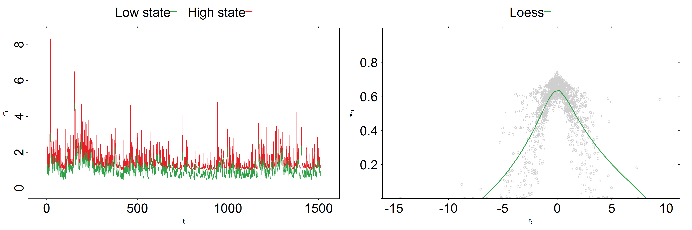
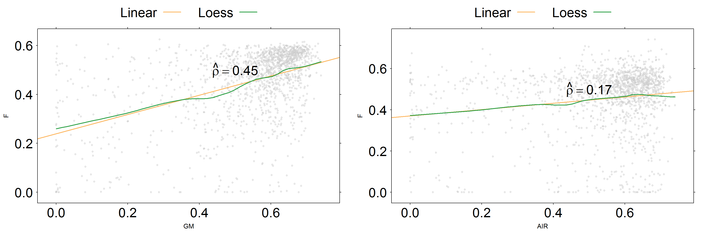

HMM applied to stock vol!
Setup
- Goal: modeling deterministic volatility for stocks
- Data: Daily close prices 2011-2016 from ^GSPC, F, GM, THO, AIR.
- State model: binary latent state with first-order markovian memory
- Observation model: \(GARCH(1, 1)\)
One stock (F) with two latent states

Common sense check: Observing small returns makes us more confindent about using the low volatility model.
A stock portfolio with two latent states

Correlation in belief states is higher for stocks in the same industry (compare F/GM vs F/AIR).
Takeaway
- States are hidden, yet meaningful. They are subject to useful domain knowledge interpretation.
- Belief states across assets are cross-correlated.
- This relationship is stronger for stocks in the same industry, with similar business models or similar exposure to macroeconomic factors.
Further research
What if hidden states were hierarchical?
Risk state of a global portfolio may be mapped into components
\(\text{Country} + \text{Industry} + \text{Individual}\)
I’m currently exploring
Hierarchical Hidden Markov Models applied to finance
for my Google Summer of Code 2017 project.
Thanks!
May any of these ideas be of value for your trading strategy or risk model?
Check the extended material for this talk
(R Notebook, fully working code, references and neat plots)
https://github.com/luisdamiano/rfinance17